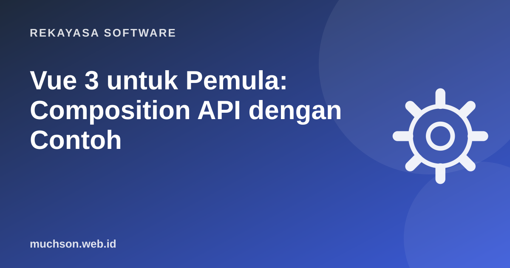

Beranda › Artikel › Rekayasa Software
Rekayasa SoftwareVue 3 untuk Pemula: Composition API dengan Contoh
Vue terkenal karena mudah dimulai: Anda bisa membuat aplikasi interaktif hanya dengan HTML, sedikit JavaScript, dan beberapa atribut khusus. Di artikel ini kita membangun aplikasi daftar tugas kecil sambil mengenal konsep inti Vue 3.

Membuat proyek
npm create vue@latest daftar-tugas
cd daftar-tugas
npm install
npm run devPerintah ini memakai Vite, sehingga server pengembangan menyala dalam hitungan detik dan perubahan kode langsung terlihat di browser.
Reaktivitas: ref dan computed
Inti Vue adalah reaktivitas: ketika data berubah, tampilan ikut berubah otomatis.
<script setup>
import { ref, computed } from "vue";
const tugasBaru = ref("");
const daftar = ref([
{ id: 1, teks: "Belajar ref", selesai: true },
{ id: 2, teks: "Belajar computed", selesai: false },
]);
const sisa = computed(() => daftar.value.filter(t => !t.selesai).length);
function tambah() {
if (!tugasBaru.value.trim()) return;
daftar.value.push({ id: Date.now(), teks: tugasBaru.value, selesai: false });
tugasBaru.value = "";
}
</script>ref()membungkus nilai agar reaktif. Di dalam script, akses dengan.value; di template tidak perlu.computed()menghitung nilai turunan dan hanya dihitung ulang bila datanya berubah.reactive()alternatif untuk objek, tetapireflebih konsisten untuk pemula.
Template: v-model, v-for, v-if, @click
<template>
<h1>Tugas ({{ sisa }} belum selesai)</h1>
<form @submit.prevent="tambah">
<input v-model="tugasBaru" placeholder="Tugas baru" />
<button>Tambah</button>
</form>
<ul>
<li v-for="t in daftar" :key="t.id" :class="{ selesai: t.selesai }">
<input type="checkbox" v-model="t.selesai" />
{{ t.teks }}
</li>
</ul>
<p v-if="daftar.length === 0">Belum ada tugas.</p>
</template>| Direktif | Fungsi |
|---|---|
{{ }} | Menampilkan nilai |
v-model | Sinkron dua arah input dan data |
v-for + :key | Mengulang elemen untuk tiap item |
v-if / v-show | Menampilkan bersyarat |
:atribut | Singkatan v-bind, atribut dari data |
@event | Singkatan v-on, menangani event |
Memecah menjadi komponen: props dan emit
<!-- ItemTugas.vue -->
<script setup>
const props = defineProps({ tugas: Object });
const emit = defineEmits(["hapus"]);
</script>
<template>
<li>
{{ props.tugas.teks }}
<button @click="emit('hapus', props.tugas.id)">Hapus</button>
</li>
</template>
<!-- Dipakai di induk -->
<ItemTugas v-for="t in daftar" :key="t.id" :tugas="t" @hapus="hapusTugas" />Mengambil data dari API
<script setup>
import { ref, onMounted } from "vue";
const produk = ref([]);
const memuat = ref(true);
const galat = ref(null);
onMounted(async () => {
try {
const res = await fetch("/api/produk");
if (!res.ok) throw new Error("Gagal memuat");
produk.value = await res.json();
} catch (e) {
galat.value = e.message;
} finally {
memuat.value = false;
}
});
</script>Tiga keadaan data
Selalu siapkan tiga keadaan: sedang memuat, berhasil, dan gagal. Banyak aplikasi pemula hanya menampilkan keadaan berhasil, sehingga layar kosong ketika jaringan lambat.
Ekosistem resmi
- Vue Router untuk halaman dan navigasi.
- Pinia untuk state yang dipakai banyak komponen (keranjang, user login).
- Nuxt untuk SSR, SEO, dan routing berbasis file.
- Vue DevTools ekstensi browser untuk melihat state dan komponen.
Tanya jawab
Options API atau Composition API?
Keduanya didukung di Vue 3. Composition API lebih fleksibel untuk komponen besar dan berbagi logika. Untuk proyek baru, banyak tim memilih Composition API dengan script setup.
Apakah Vue cocok dengan Laravel?
Sangat cocok. Laravel menyediakan starter kit dengan Vue dan Inertia, sehingga Anda bisa membuat aplikasi satu halaman tanpa membangun API terpisah.
Perlukah TypeScript?
Tidak wajib untuk mulai. Vue 3 mendukung TypeScript dengan sangat baik, dan bermanfaat begitu proyek membesar.